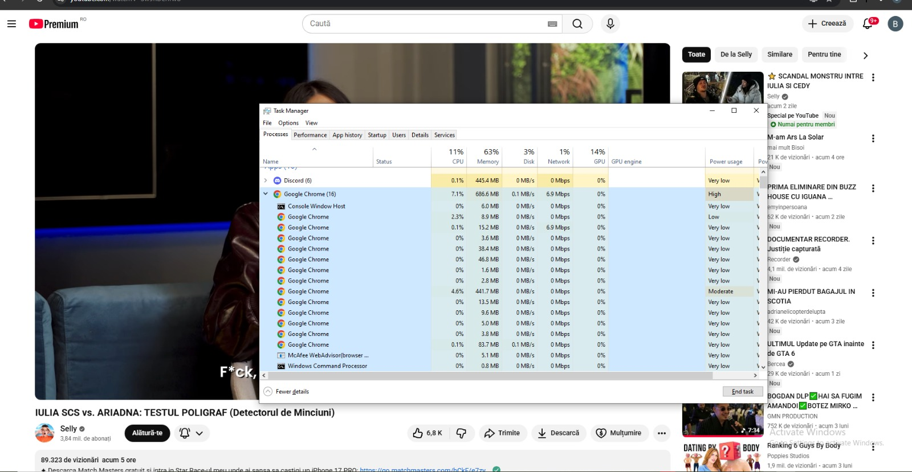
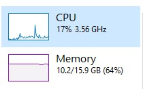
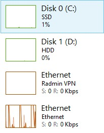

Structura rețelei personale și accesul la internet

Rețeaua personală este formată dintr-un router TP-Link conectat la PC prin cablu.
Caracteristicile conexiunii la rețea
- Adresă Windows: 02-50-1E-AA-39-D8
- Adresă IP: 26.92.71.189
- Debit download: 513.8
- Debit upload: 530.7
Specificații tehnice ale stației principale de lucru
| Denumire componentă | Producător | Parametri |
|---|---|---|
| Procesor | Intel | Core i5-10400F, 2.9 |
| Memorie RAM | GoodRam | 2x 8GB , 2666 MHz |
| Stocare | KingStone | 512 gb SSD |
Monitorizare resurse


